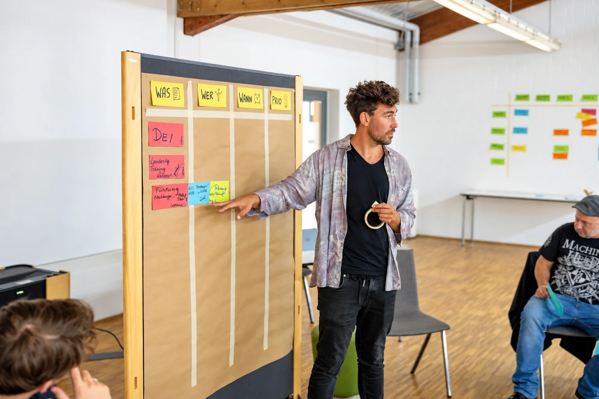
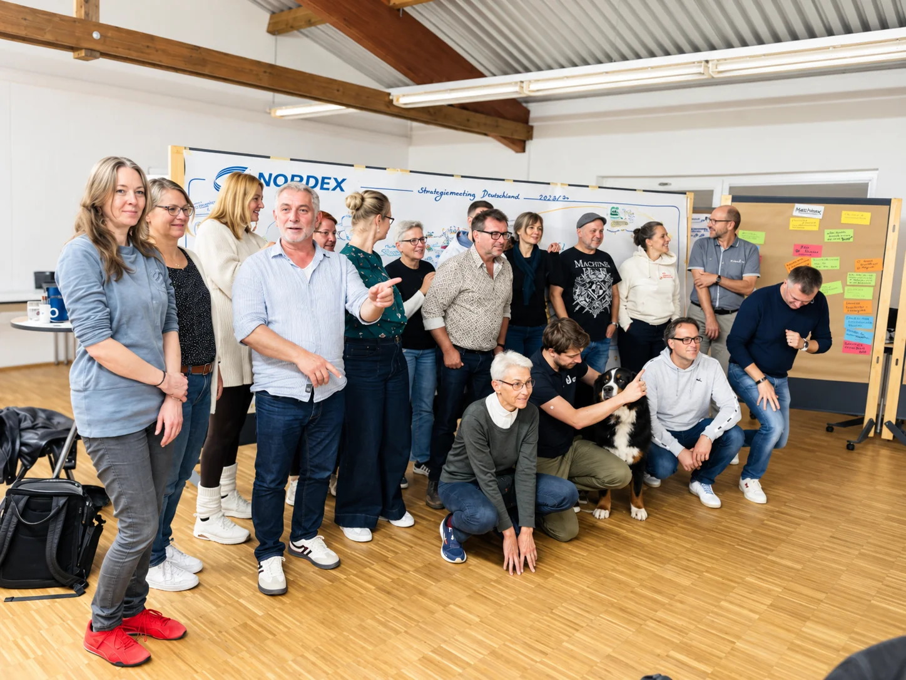
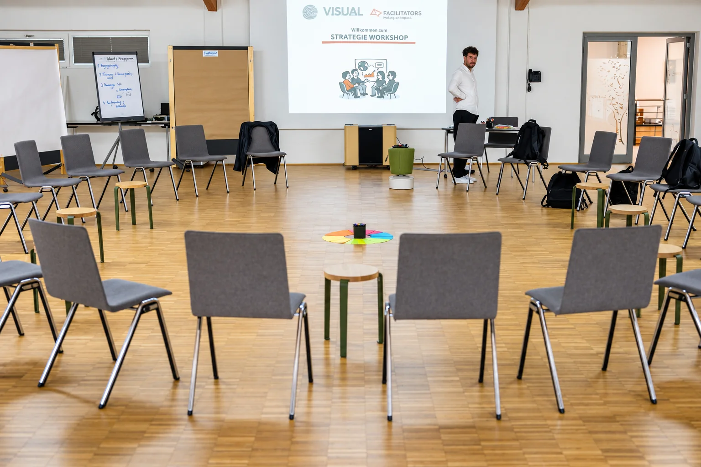
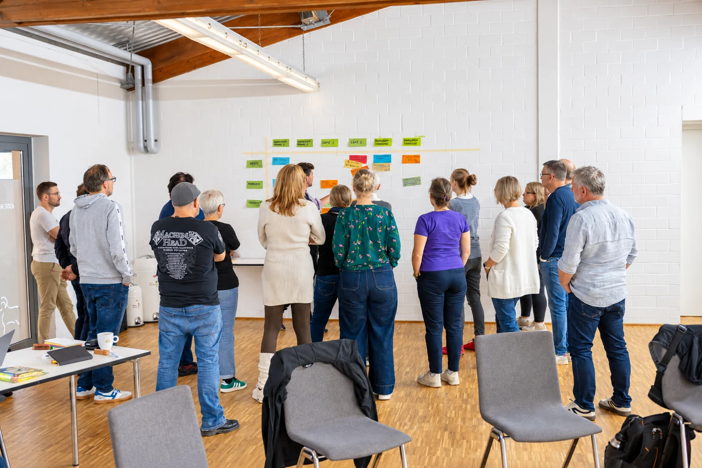
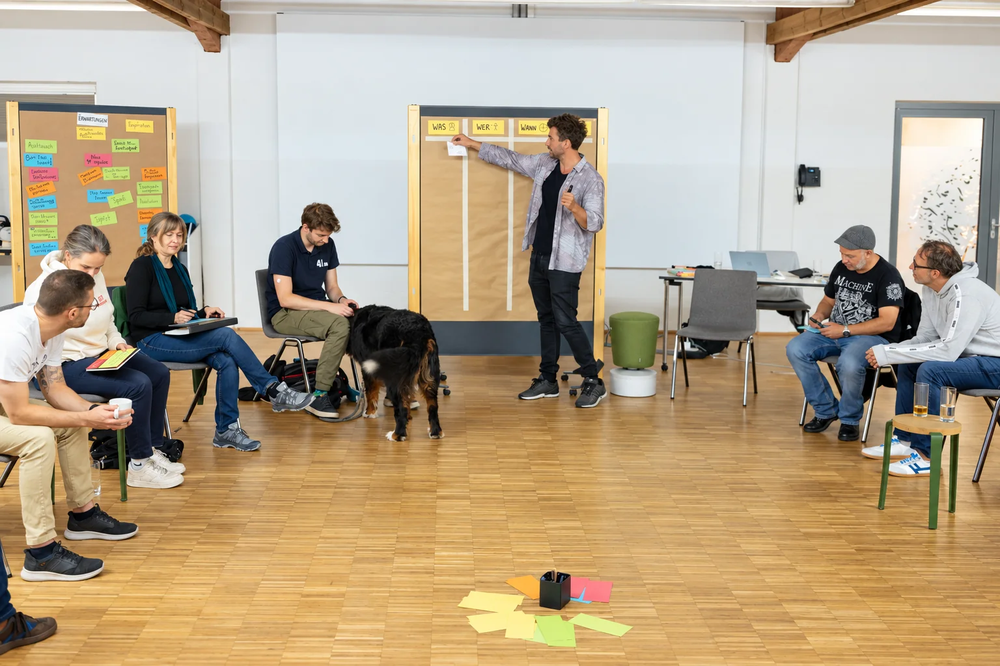

AusgangslageStarting point
Der neu gewählte Betriebsrat brachte unterschiedliche Erfahrungen mit: etwa die Hälfte war schon im Amt, die andere Hälfte neu dabei. Einige begegneten sich zum ersten Mal. Gleichzeitig standen rund 25 Themen auf der Liste.The newly elected works council brought together different levels of experience: around half had served before, while the other half were new. Some were meeting for the first time. At the same time, around 25 topics were waiting to be addressed.
Die Aufgabe war, aus dem Gremium eine Mannschaft zu machen und einen Fahrplan zu entwickeln, der zu den tatsächlichen Kapazitäten passt.The task was to build a team and develop a roadmap that matched the council’s actual capacity.
Meine RolleMy role
Als Lead Facilitator habe ich den Auftrag mit dem Vorsitzenden geklärt, das Kernteam in einem Briefing-Call einbezogen und darauf aufbauend die beiden Tage konzipiert und moderiert.As lead facilitator, I clarified the brief with the chair, involved the core team in a briefing call and designed and facilitated both days.
Dazu gehörten die Vor- und Nachbereitung sowie die Prozesssteuerung im Raum. Ablauf und Raum habe ich unterwegs angepasst, wenn die Zusammenarbeit es brauchte.My role included preparation, follow-up and guiding the process in the room. I adapted the agenda and room setup as the work required.
ProzessProcess
Erst eine gemeinsame Basis schaffen, dann Entscheidungen treffen. Diese Reihenfolge hat die beiden Tage getragen.Build a shared foundation, then make decisions. This sequence shaped the two days.
Tag 1: Als Team zusammenfindenDay 1: Coming together as a team
Kennenlernen, Spielregeln und die Frage, was es braucht, um offen miteinander zu sprechen. Auf die Arbeit zu psychologischer Sicherheit folgten eine gemeinsame Vision und ein erster Open Space für die Themen des Gremiums.Getting to know each other, agreeing on how to work together and exploring what helps people speak openly. Work on psychological safety led into a shared vision and an initial Open Space for the council’s topics.
Tag 2: Prioritäten verbindlich machenDay 2: Committing to priorities
Die Themenlandschaft kam an die Wand. Das Gremium priorisierte entlang seiner realen Kapazitäten: Was steht jetzt an, was als Nächstes, und was lassen wir bewusst los? Daraus entstanden eine Roadmap und klare Zuständigkeiten.The topics went up on the wall. The council prioritised them against its actual capacity: what needs attention now, what comes next and what can we consciously let go of? This became a roadmap with clear responsibilities.
Matthias Weidbrecht von VISUAL FACILITATORS hielt den Prozess durchgehend visuell fest. Am Ende verdichtete sich die Arbeit zu einem gemeinsamen Zielbild.Matthias Weidbrecht of VISUAL FACILITATORS captured the process visually throughout. By the end, the work had been brought together in a shared visual vision.
ErgebnisseOutcomes
- Ein Gremium, das sich kennt. Auch die neuen Mitglieder bringen sich ins Gespräch ein.A council whose members know each other. New members also contribute to the conversation.
- Eine gemeinsame Richtung. Eine geteilte Vision und überarbeitete Spielregeln geben der Zusammenarbeit Orientierung.A shared direction. A common vision and revised working agreements guide collaboration.
- Ein realistischer Fahrplan. Aus rund 25 Themen wurde eine priorisierte Roadmap mit Jetzt, Als Nächstes und bewusst Losgelassenem.A realistic roadmap. Around 25 topics became clear priorities for Now, Next and what to consciously let go of.
- Verantwortung wird konkret. Für die nächsten Schritte stehen Arbeitskreis, Name, erster Schritt und Termin fest.Concrete responsibilities. Next steps have a working group, a named person, a first action and a date.
- Das Zielbild bleibt sichtbar. Das Graphic Recording ist für den Versammlungsraum gedacht und auch für die Kommunikation ins Unternehmen freigegeben.The vision stays visible. The graphic recording is intended for the meeting room and approved for internal company communications.



Kunde und KooperationspartnerClient and collaboration partner
- Nordex EnergyBetriebsrat HamburgHamburg works council
- VISUAL FACILITATORSGraphic Recording: Matthias Weidbrecht